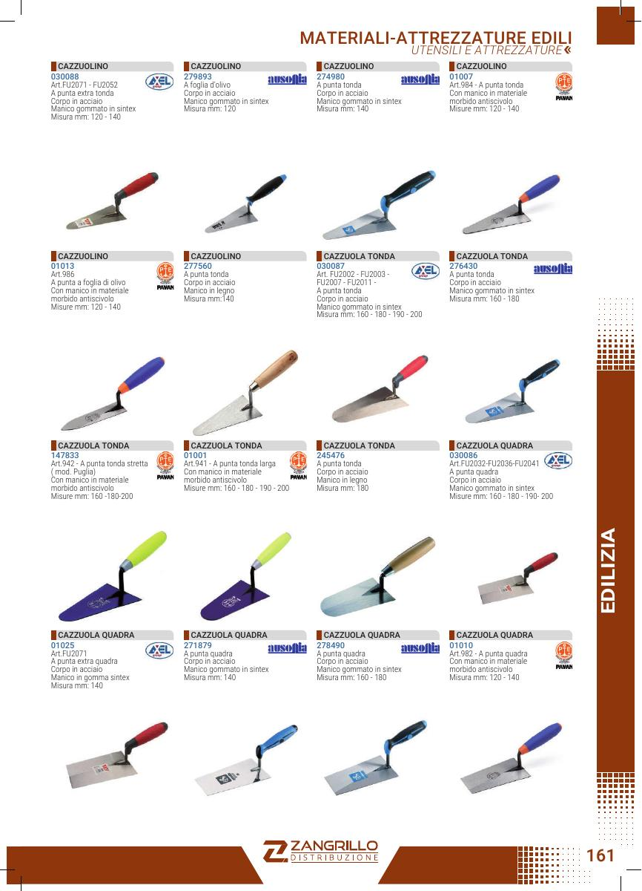
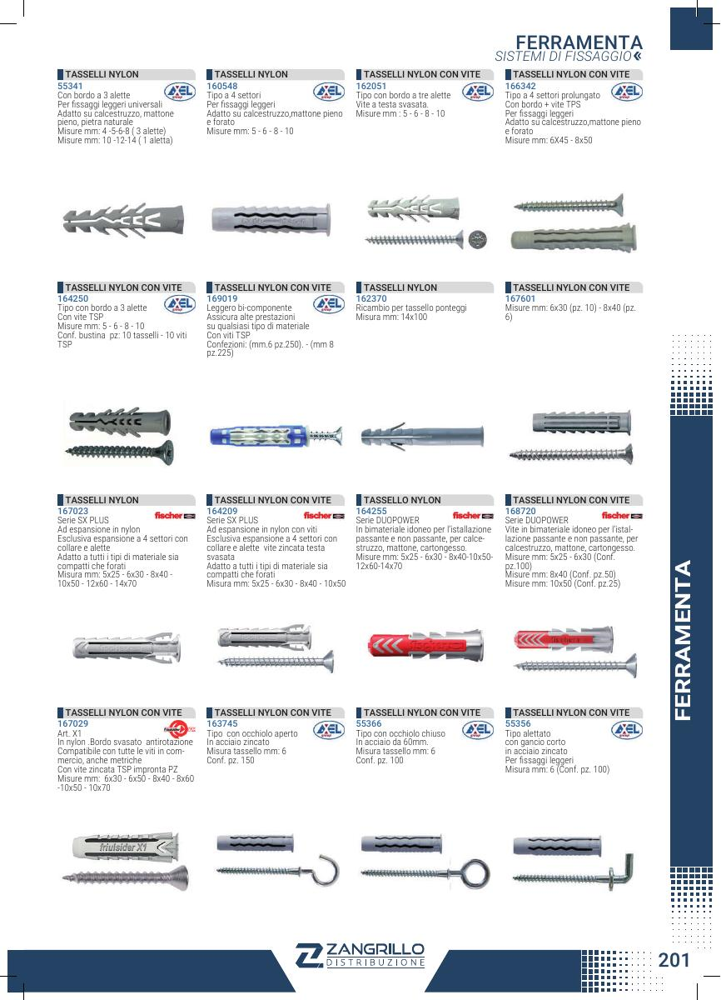
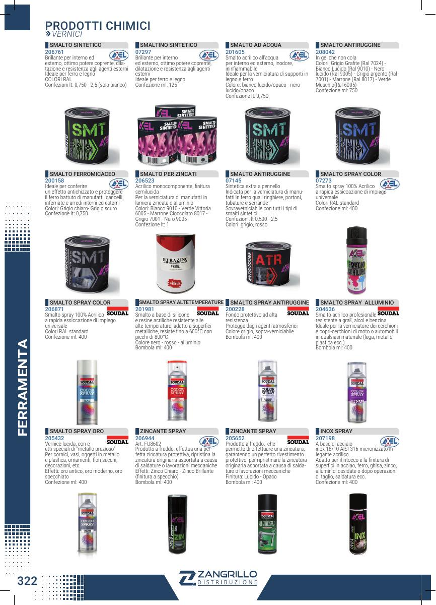
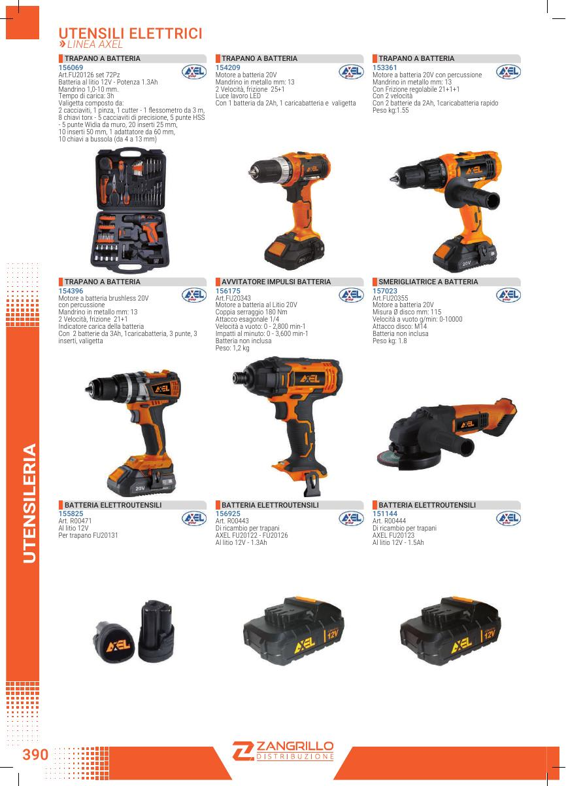

FILO COTTO MATASSINE N°5 ITALIA
Matassine filo cotto per tracciature e lavorazioni edili.
Dettagli tecnici
- N°5 · Italia
- Prodotto indicato nel catalogo ufficiale Zangrillo
- Disponibilità e confezionamento da verificare con DIGI HOUSE
Ferramenta, utensili, fissaggi e materiali per il cantiere: una selezione organizzata dei prodotti richiesti dal catalogo ufficiale Zangrillo, con varianti, misure e schede tecniche consultabili.
Prodotti selezionati dal catalogo ufficiale, ripresentati con l’identità DIGI HOUSE.

Matassine filo cotto per tracciature e lavorazioni edili.
Mastelli neri per movimentazione e preparazione dei materiali in cantiere.
Cazzuolino con manico in legno per lavori di posa e finitura.
Cazzuole extra quadre per applicazione e lavorazione di malte.
Frattone in acciaio inox per stesura e finitura.
Frattone Ancora per lavorazioni di precisione.
Spatole rigide per rasatura e rimozione del materiale.
Spatole dentate per distribuzione regolare di adesivi e collanti.
Frattone in plastica per lavorazioni e finiture.
Frattone con spugna blu per finiture e pulizia.
Frattone spugna per lavorazioni su pavimento.
Pialla in alluminio per gesso.
Raschiatori per intonaco e preparazione delle superfici.
Tracciatori completi in alluminio per linee e riferimenti.
Secchio da muratori in plastica gialla.
Foretti per lavorazioni su cartongesso.
Prodotti selezionati dal catalogo ufficiale, ripresentati con l’identità DIGI HOUSE.

Tasselli in nylon per fissaggi su supporti edili.
Viti TPS per fissaggio su cemento.
Chiodi in acciaio per fissaggi e lavorazioni.
Viti Panelvit cromate per fissaggi.
Cartone ondulato per protezione e imballaggio.
Feltri per protezione del pavimento durante i lavori.
Teli copritutto per proteggere superfici e arredi.
Fogli protettivi per copertura e protezione.
Prodotti selezionati dal catalogo ufficiale, ripresentati con l’identità DIGI HOUSE.

Silicone acetico trasparente per sigillature e finiture.
Silicone acrilico per sigillature e lavori di completamento.
Schiuma poliuretanica per pistola.
Sbloccante multiuso per manutenzione e protezione.
Prodotti selezionati dal catalogo ufficiale, ripresentati con l’identità DIGI HOUSE.

Dischi da taglio per metallo.
Dischi per taglio marmo.
Chiavi Torx a T per serraggio professionale.
Martello da carpentiere Bellota.
Martello da banco per lavorazioni e montaggio.
Mazzuola in gomma nera.
Mazzetta in microfibra extra.
Scalpelli da falegname Stanley.
Strettoi da falegname.
Cutter con lama.
Doppimetri in legno bianco-gialli.
Rotelle metriche per rilievi e misurazione.
Flessometri Milwaukee Autolock.
Puntelli da muratore regolabili.